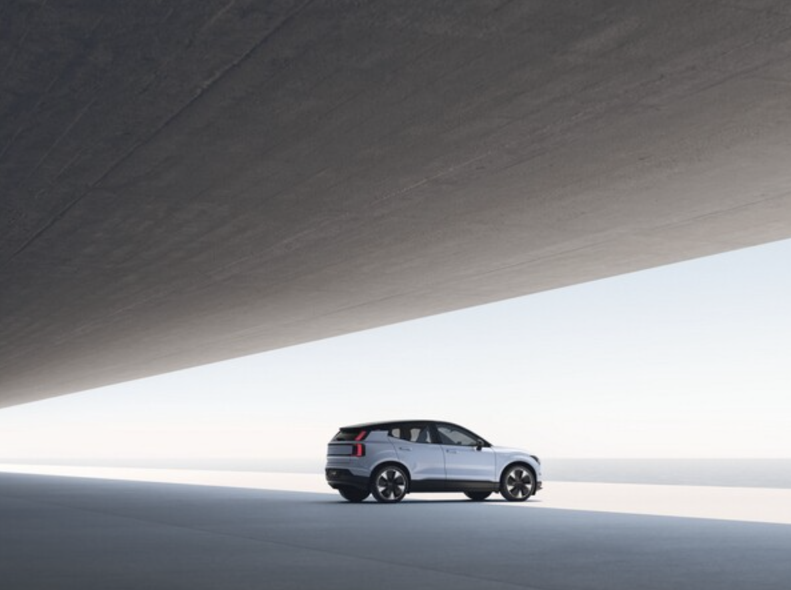
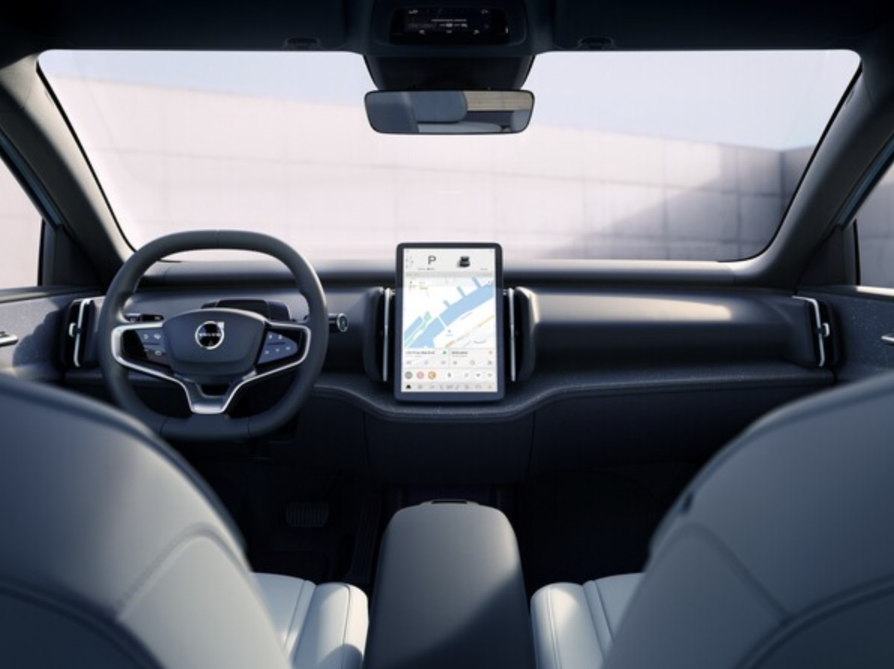
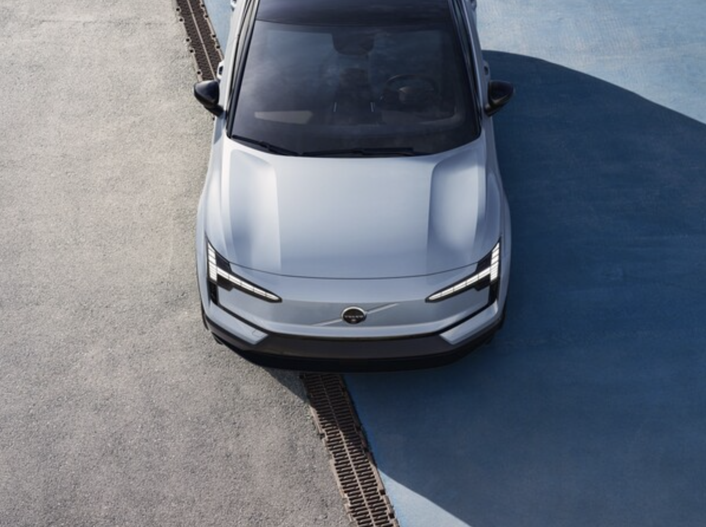

볼보자동차, 밀라노서 소형 전기 SUV EX30 글로벌 공개
안전의 볼보다운 편의 및 안전사양 탑재..볼보 역사상 가장 작지만 강한 전기차 설계

볼보 EX30 사진
볼보자동차가 현지시각으로 6월 7일, 이탈리아 밀라노에서 키노트 이벤트를 열고 볼보 EX30을 세계 최초로 공개 했다.
EX30은 볼보자동차가 브랜드 역사상 최초로 선보이는 가장 작은 소형 SUV이자, 순수 전기차 라인업을 확장하는 네 번째 모델이다. 이 차는 볼보 특유의 스칸디나비안 디자인과 최첨단 기술을 바탕으로 작은 차체에서도 상위 모델 수준의 안전과 브랜드 경험을 이어갈 수 있도록 설계됐으며, 이에 더해 전체 생산 및 제품 수명 주기에 대한 탄소 배출뿐만 아니라, 사용되는 모든 소재까지도 엄선해 볼보의 모델 중 가장 낮은 CO2 배출량을 달성한 것이 특징이다.
볼보자동차 최고경영자, 짐 로완은 "순수 전기차 EX30은 단순히 가장 작은 SUV 이상의 더 큰 의미가 있다"며,"볼보에 기대하는 모든 것을 더 작은 패키지에 담았다. 따라서 다른 모델들처럼 안전하면서 인간, 그리고 그들이 원하는 것들을 중심으로 설계된 탁월한 제품"이라고 소개했다.

볼보 EX30 사진
짐 로완 CEO의 설명처럼 EX30의 외관은 볼보가 오랜 시간 이어온 디자인 가치를 더 작은 형식으로 구현했다. 자신감 넘치는 얼굴과 폐쇄형 실드, 디지털 버전의 토르의 망치를 형상화한 헤드라이트는 순수 전기차만의 독창적 인 캐릭터를 강조한다.
또한 긴 휠 베이스와 앞뒤가 동일한 오버행, 큰 사이즈의 휠로 균형과 세련미를 더했다. 클라우드 블루(Cloud Blue)에서부터 스웨덴의 서해안을 따라 바위에서 자라는 이끼에서 영감을 받은 밝고 표현력이 풍부한 모스 옐로우(Moss Yellow)에 이르기까지 다섯 가지의 외관 색상은 선명한 개성을 선사한다.

볼보 EX30 사진
실내는 지속 가능한 접근 방식을 취하면서도 각기 고유한 표현을 연출한 4가지 인테리어 룸을 옵션으로 제공한다. 여기에는 재활용 데님, 오래된 창틀, 롤러 셔터와 같은 폐기물에서 얻은 재활용 플라스틱, 볼보자동차 테크펀드가 투자한 스위스 천연섬유 가공회사 비컴프(Bcomp)의 아마(flax) 기반 합성 섬유, 70% 재생 폴리에스터를 포함한 울 혼방, 재활용 플라스틱으로 제작된 니트 소재 등이 사용된다. 또한 스웨덴 및 핀란드의 숲에서 얻은 바이오 소 재와 재활용 PET병 소재를 활용해 새롭게 제작된 혁노르디코(Nordico) 소재도 만나볼 수 있다.
대시보드 전체 폭에 맞춘 사운드바와 스마트 수납 기능도 기존 자동차에서 볼 수 없는 새로운 공간 경험을 제공한 다. 특히 가정용 오디오에서 영감을 받은 EX30의 사운드바는 일반적으로 도어에 위치하는 여러 스피커를 하나로 통합한 스마트 디자인의 대표적인 예로, 더 많은 수납 공간을 확보하면서 불필요한 자원의 사용까지 줄였다. 또한 하만카돈(Harman Kardon) 하이엔드 사운드 시스템을 추가하면 전면에서부터 실내 전체를 채우는 높은 품질의 사운드를 제공한다.
스칸디나비아 풍경에서 영감을 받아 톤과 음영이 천천히 바뀌는 5가지 앰비언트 라이트는 각 테마에 따라 앰비언 트 사운드스케이프와 조화를 이룬다. 조수석에 마련되는 글로브 박스는 평평한 바닥에서 제공되는 여분의 공간을 활용해 운전자와 탑승자 모두 쉽게 활용할 수 있도록 센터 스크린 아래로 옮겼다.
센터 콘솔에는 필요에 따라 음료나 스마트폰 등을 보관하는 용도를 선택할 수 있도록 슬라이딩 시스템을 도입했으 며, 가방을 둘 수 있는 개방형 공간과 선글라스, 이어폰 등 작은 물건을 수납할 수 있는 추가 수납 공간도 갖췄다.
이 밖에도 뒷좌석 승객을 위한 슬라이딩 방식의 수납 상자, 스마트폰 보관용 전용 포켓, 트렁크 내부에 탑재 가능 한 물품을 안내해주는 사이즈 가이드 등을 통해 공간 활용성 극대화에 심혈을 기울였다. 대시보드 중앙에 자리 잡은 12.3인치 센터 스크린은 주행에 필요한 모든 정보를 하나의 화면을 통해 제공하는 운 전자 중심의 공간을 조성했다. 이 새로운 디스플레이는 퀄컴의 스냅드래곤 콧핏 플랫폼 기술이 적용돼 빠른 반응 속도와 함께 5G 연결이 지원된다.
글로벌 모델의 경우에는 구글 어시스턴트(Google Assistant) 핸즈 프리, 구글 맵스 내비게이션(Google Maps navigation), 구글 플레이(Google Play) 앱 등 구글의 첨단 인포테인먼트 서비스가 제공되며, 국내 시장에는 한 국 소비자 니즈에 최적화된 T맵 인포테인먼트 시스템이 적용된다. 뿐만 아니라 다양한 브랜드의 스마트폰과 호환 가능한 초광대역통신 및 디지털 키 등 각종 커넥티비티 기능, OTA 무선 업데이트 기능 등도 지원될 예정이다.

볼보 EX30 사진
파워트레인은 경제성과 주행거리, 성능 등 운전자가 자신의 필요에 따라 직접 선택할 수 있도록 2가지 배터리 타 입이 조합되는 3가지 동력계가 제공된다. 먼저 대부분의 시간을 도시에서 보내거나 짧은 거리를 이용한다면, 후륜 기반의 LFP(리튬 인산철) 배터리와 싱글 모터 조합을 선택할 수 있다. 1회 충전 시 최대 344km(WLTP 기준)의 주행가능거리를 제공하는 구성이다.
NMC(니켈, 망간, 코발트 등 삼원계) 배터리와 싱글 모터 라인은 1회 충전 시 최대 480km(WLTP 기준)까지 주행 이 가능하다. 삼원계 배터리에 트윈 모터, 사륜구동 조합 트림을 선택하면 428마력(315KW)의 강력한 출력을 내 는 전기 모터를 통해 브랜드 역사상 가장 빠른 3.6초의 제로백 가속 성능을 누릴 수 있다.
또 DC 콤보 타입 충전기를 통해 최대 134kW(싱글모터 모델) 및 153kW(싱글 모터 익스텐디드 및 트윈 모터 퍼 포먼스 모델)의 출력으로 25분 만에 10%에서 80%까지 충전할 수 있으며, 충전 시 센터 디스플레이를 통해 최 대 충전 범위 및 배터리 충전 전류, 충전 시작 시간 등을 설정할 수 있다.
안전의 볼보답게 차체 구성 또한 96년 간 쌓아온 볼보의 노하우를 가득 담았다. EX30은 천장 루프를 비롯 탑승자 안전 케이지와 A, B, C 필러를 더욱 강화한 구조로 설계됐으며, 순수 전기차의 특성을 고려해 잠재적인 충돌사고 에서 효율적으로 충격을 완화시킬 수 있도록 섀시와 안전 케이지에 다양한 형태의 고강도 강철을 사용했다. 여기 에 측면 충돌 시 머리와 흉부 부상을 줄일 수 있도록 운전석 안쪽에 새로운 파 사이드(far-side) 에어백이 탑재된다.
이와 더불어 사각지대에서 주행 중인 자전거나 스쿠터 등과의 충돌 사고 예방을 위해 문을 열 때마다 시각적 및 오 디오 신호를 통해 주의를 주는 문 열림 경고 기능도 갖췄다. 그리고 모든 유형의 주차 공간을 감지해 운전자가 3D 인터페이스 화면을 조작하는 것만으로 주차를 할 수 있는 차세대 파크 파일럿 어시스트(Park Pilot Assist)를 브 랜드 최초로 탑재했다. 이 밖에도 차선 변경을 지원하고 대형 트럭을 추월할 경우에는 더 많은 공간을 확보하는 차 세대 파일럿 어시스트(Pilot Assist)도 적용된다.
한편 볼보는 볼보의 상징이자 시그니처 트림인 EX30의 크로스컨트리(CrossCountry) 모델 도입도 계획 중이라 고 밝혔다. 해당 모델은 2024년 말부터 생산될 예정이며, EX30보다 더 높은 지상고는 물론 크로스 컨트리 모델 차별화를 위한 전후면 및 측면 스키드 플레이트, 블랙 패널로 처리된 전면 범퍼 및 부트리드(트렁크 마감), 크로스 컨트리 시그니처와 함께 19인치 블랙휠 또는 18인치 전용 타이어 및 휠 옵션 등이 추가될 예정이다.